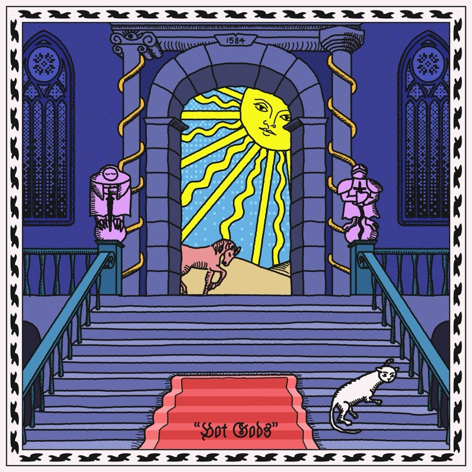

Our band bio
Cindy Gravity is an experimental pop trio from Stuttgart, drifting somewhere between psychedelic pop, R’n’B and yacht rock. After their debut Brutally Soft, their new album HOT GODS turns up the colour and the weirdness.
The songs explore inner demons, mystical experiences, and ritual magic. With an eclectic arsenal of drum machines, Japanese synthesizers, and surf guitars, Cindy Gravity channels three-part harmonies into pop songs about the synchronicity of the universe.
More fearless than ever, the trio keeps pushing their sound. Beautiful pop melodies dissolve into dream logic and surreal storytelling.
Our latest tracks

Shows we’ve played (highlights)
Schokoladen, Berlin · Merlin, Stuttgart · Roxy, Ulm · Horst Klub, Kreuzlingen · Monarch, Berlin · Marienplatzfest, Stuttgart · Sommerfest Shedhalle, Tübingen · Sub, Graz · Rue de la Musique, Strasbourg · Quer Bar, Hamburg · Panke, Berlin.
Germany, Austria, Switzerland and France.
Find us online
Booking & management
booking@cindygravity.com